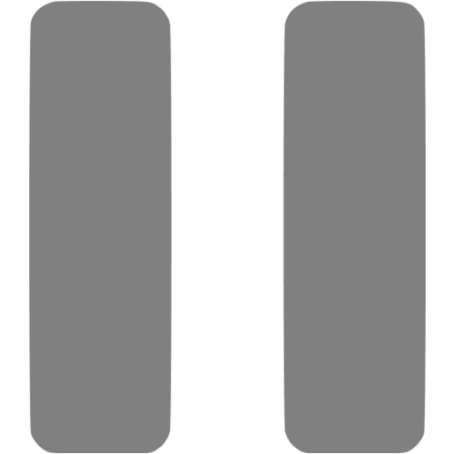
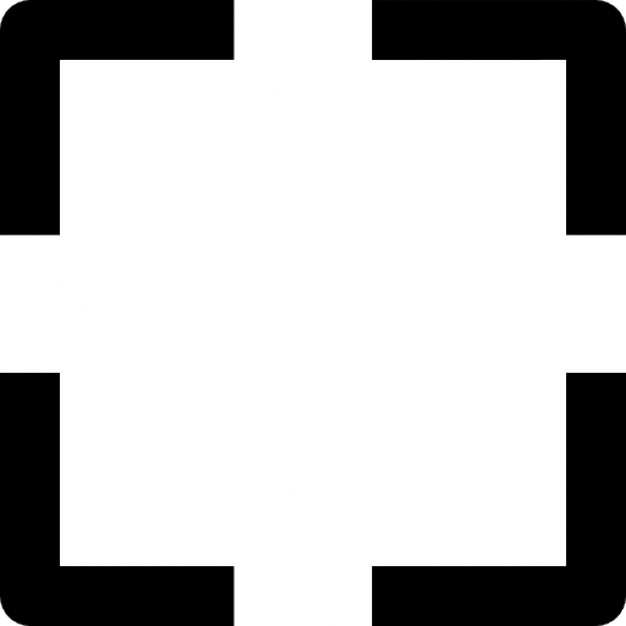

Actions
API Reference:
getNeighbor(position)-
position– A two element array ([x, y]) representing which neighbor to retrieve. Coordinates are relative toself, so[1,0]would refer to the neighbor immediately to the right ofself, and[0,1]immediately belowself.
Gets the pixel object for a specific neighbor, relative to self. Do not use
a pixel object to set the type, use
write(...) instead.
Returns a pixel object (see "Pixel Object").
Example
var left = getNeighbor([-1, 0]);
var right = getNeighbor([1, 0]);
var above = getNeighbor([0, -1]);
var below = getNeighbor([0, 1]);
log(left.type);
getNeighborSum(types [, n])-
types– An array of integers denoting the types of pixels that count toward the sum. -
n– The distance at which to assess neighbors.- If not specified,
ndefaults to 1.
- If not specified,
Counts the number of pixels in the extended Moore
neighborhood of
self that have a type listed in types,
excluding self. n indicates the "extension" of the Moore
neighborhood, where n = 1 denotes the normal Moore neighborhood.
Returns an integer.
Example
// I want to find the number of pixels of type 2 which
// touch self (diagonal counts)
var count = getNeighborSum([2]);
log(message)-
message– An object to be logged.
Access to the
console.log(...) function. Any log(...)
message will show up in the console in the developer tools.
Returns undefined.
Example
// I need to debug some stuff
log(getNeighbor([1, 0]));
// now right click on the top bar, click "inspect element," and
// navigate to the console. Your message should be there.
mapNeighborhood(func [, n])-
function– A function to map across the neighborhood. This function is provided two arguments (in order):- A pixel object representing a pixel in the neighborhood
- An array denoting the relative position of the neighbor in relation to self.
-
n– The distance at which to map to neighbors.- If not specified,
ndefaults to 1.
- If not specified,
Maps a function to the all the pixels in the extended
Moore
neighborhood of
self, excluding self. n indicates the "extension" of the Moore
neighborhood, where n = 1 denotes the normal Moore neighborhood.
Returns undefined.
Example
// remove all pixels within 2 of self
mapNeighborhood(function(pix, pos){
remove(pos);
}, 2);move(position)-
position– A two element array ([x, y]) representing where to moveselfto. Coordinates are relative toself, so[1,0]would refer to the neighbor immediately to the right ofself, and[0,1]immediately belowself.
Moves
self to the specified location. This is equivalent to
write(position, self.type) followed by
writeSelf(null).
Returns undefined.
Example
// move upward on the screen
move([0, -1]);
Pixel Object
An object referring to a single pixel. Each pixel object has the following attributes:
-
pixel.pos– an array denoting the global position ofpixel. Use local coordinates (e.g.[0, 1]) in most cases. -
pixel.type– an integer denoting the type ofpixel, ornullif the pixel does not exist.
Example
// getNeighbor returns a pixel object
// if there is no neighbor to the right, remove self
if(getNeighbor([1, 0]).type === null){
writeSelf(0);
}plus(a, b)-
a– Annelement array ([x, y, z, ...]). -
b– Anothernelement array ([x, y, z, ...]).
Returns the vector sum of the two arrays, or
[a[0] + b[0], a[1] + b[1], a[2] + b[2], ...].
Returns an
n element array.
Example
sum = plus([0, 1], [2, 3]);
// sum is [2, 4]
remove([position])-
position– A two element array ([x, y]) representing which pixel to remove. Coordinates are relative toself, so[1,0]would refer to the neighbor immediately to the right ofself, and[0,1]immediately belowself.positionis[0, 0]by default
Changes the type of the specified pixel to null, removing it. Calling
remove() does not guarantee removal if in conflict
with another command (perhaps a change command). Conflicts
are resolved in the onUpdateCollision function.
Returns undefined.
Example
// if the neighbor to the right has color 1
if(getNeighbor([1,0]).type === 1){
// remove this pixel...
remove();
// and the pixel below it
remove([0,1]);
}self
A pixel object referencing the pixel currently being modified.
self
has two attributes:
-
self.pos– an array denoting the global position of the current pixel. Use local coordinates (e.g.[0, 1]) in most cases. -
self.type– a positive integer denoting the type of the current pixel.
Example
// turn the neighbor the same color as self
write([1, 0], self.type);
sub(a, b)-
a– Annelement array ([x, y, z, ...]). -
b– Anothernelement array ([x, y, z, ...]).
Returns the vector subtraction of the two arrays, or
[a[0] - b[0], a[1] - b[1], a[2] - b[2], ...].
Returns an
n element array.
Example
diff = sub([0, 1], [2, 3]);
// sum is [-2, -2]
write(position, type)-
position– A two element array ([x, y]) representing where to write to. Coordinates are relative toself, so[1,0]would refer to the neighbor immediately to the right ofself, and[0,1]immediately belowself. -
type– An integer greater than or equal to one which denotes the type (color) to write. This number corresponds to the keyboard shortcut which to access the color. Iftypeis null, the pixel is removed.
Changes the type of the specified pixel to
type, overwriting
any existing type or creating a new pixel. Calling write(...)
does not guarantee a change if it conflicts with another command. Conflicts
are managed in the onUpdateCollision function.
Returns undefined.
Example
// same as remove()
write([0,0], null);
// change the next pixel over to type 2
write([-1,0], 2);
writeGlobal(position, type)-
position– An array[x, y]that corresponds to the global coordinates of the pixel to write to. -
type– An integer greater than or equal to one which denotes the type (color) to write toself. This number corresponds to the keyboard shortcut which to access the color. Iftypeis null,selfis removed.
Writes a type to a pixel, much the same way as
write(...). The difference
is that the position is specified in terms of absolute coordinates instead of local ones.
write(pos, type) is the same as writeGlobal(plus(self.pos, pos), type).
Returns undefined.
Example
// write to the pixel at (0,0), wherever that is
writeGlobal([0, 0], 1);
writeSelf(positions, type)-
type– An integer greater than or equal to one which denotes the type (color) to write toself. This number corresponds to the keyboard shortcut which to access the color. Iftypeis null,selfis removed.
A convenience function for
write([0, 0], type);
Returns undefined.
Example
// same as remove()
writeSelf(null);
// change to type 2
writeSelf(2);
writeSeveral(positions, type)-
positions– An array of positions (each of the form[x, y], relative toself) denoting the group of pixels to write to. -
type– An integer greater than or equal to one which denotes the type (color) to write. This number corresponds to the keyboard shortcut which to access the color. Iftypeis null, the pixels are removed.
A convenience function for performing several
write(...) calls.
Returns undefined.
Example
// turn the next two pixels over to type 3
write([[1,0], [2,0], [3,0]], 3);
On Update Collision
Examples
Export Pixels
Import Pixels
Copy and paste from this box to import and export pixels